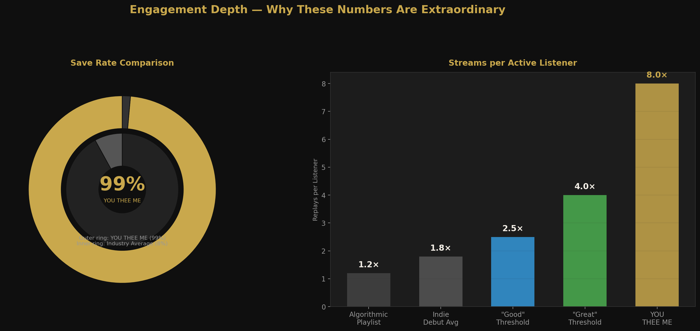
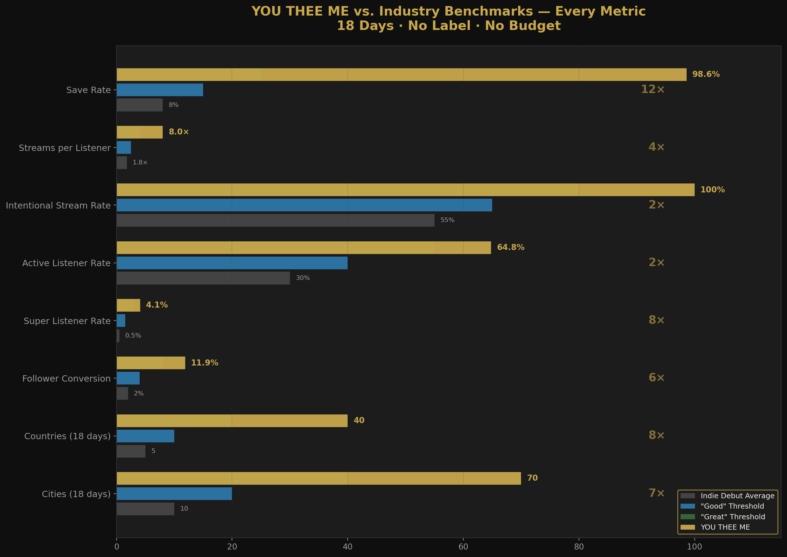
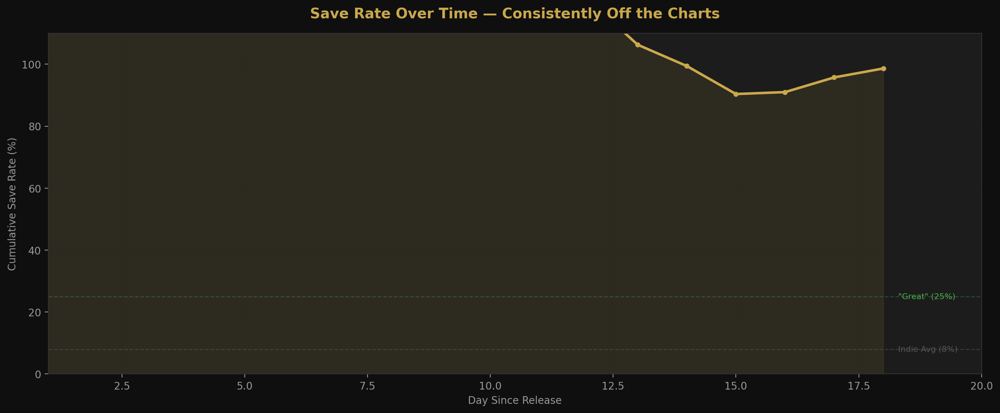
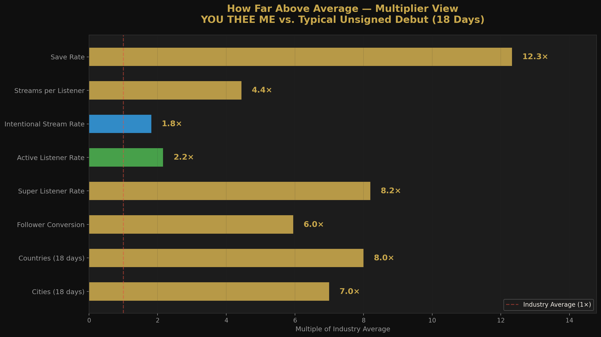
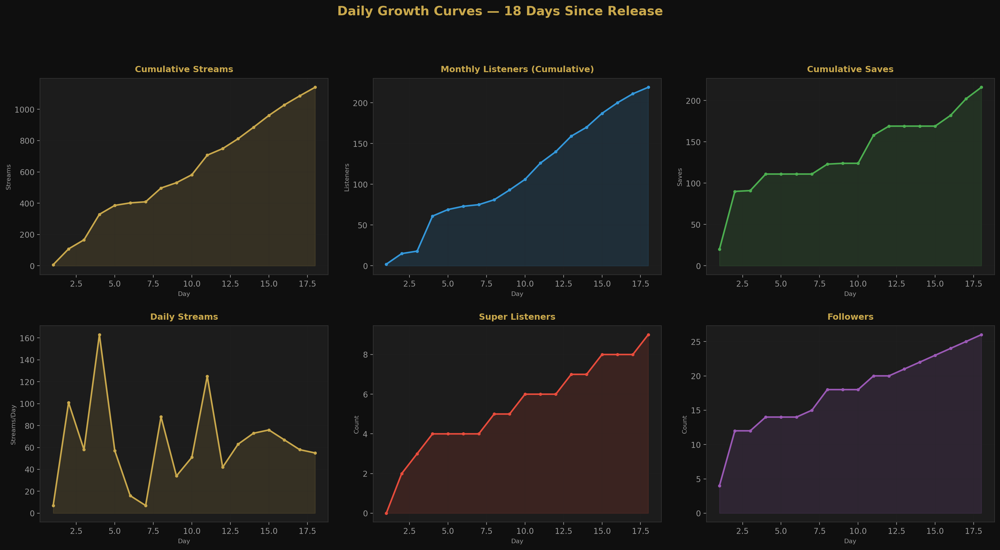

Anthony John Sissian
YOU THEE ME
The Seeker Was the Sought
#1
New Pop
The Further · Germany
| Metric | Industry Avg | YOU THEE ME | Multiple |
|---|---|---|---|
| Save Rate | 8% | 99% | 12.3 |
| Streams per Active Listener | 1.8 | 8.0 | 4.4 |
| Intentional Stream Rate | 55% | 100% | 1.8 |
| Active Listener Rate | 30% | 64.8% | 2.2 |
| Super Listener Rate | 0.5% | 4.1% | 8.2 |
| Follower Conversion | 2% | 11.9% | 6.0 |
| Countries (18 days) | 5 | 44+ | 8.8 |
| Cities (18 days) | 10 | 70+ | 7.0 |
Visual Analysis






Additional Curator Quotes
| Outlet | Country | Quote |
|---|---|---|
| Common Sense | Singapore | "I love the motivational lyrics... the vocals are excellent" |
| F Sharp Minor | India | "Incredible voice. The performance is stellar!" |
| Visual Atelier 8 | Italy | "The singer's voice has a nice energy, emotionally strong" |
| Boundless Fusion | Belgium | "Everything sounds polished and well executed" |
| Rap|R&B Zone | International | "World-class level "” a unique magic to conquer the soul" |
| Afternoon Tea Collective | USA | "Pure pop elation through and through!" |
Imagine a reality where you are the absolute only conscious being in the universe. No planets, no other people. Just you "” awake "” and an infinite silent void.
That is where YOU THEE ME begins.
The album is built around a foundational idea: that a single unified consciousness, paralysed by its own eternal isolation, fractures itself "” inventing a "you" and a "me" just to have someone to talk to. Creation was not a physical explosion of matter. It was loneliness finding a solution.
The final five tracks "” The King Suite "” depict the end of the earthly trial. As the soul returns, structured language begins to fail. The English lyrics break down into phonetic chants. The chants are not composed. They arrived fully formed in a single meditative session. No linguist has been able to identify the language.
"This is not an album. This is a map home."

| Outlet | Country | Type |
|---|---|---|
| The Concert Chronicles | International | Article |
| The Sounds Won't Stop | USA | Blog Feature |
| The Building | International | Article |
| Night Shift | International | Article |
| PRESSED | International | Article |
| Cold Stone | International | Article |
| Portal POP Mais | Brazil | Article |
| De Ochtendschijn | Netherlands / USA | Social Media |
| Korliblog | International | Article |
| HailTunes | International | Article + HailTunes TV |
Press Kit Presentation
⬇ Download Press Kit Presentation (PDF — 19 Slides)Full visual press kit — YOU THEE ME — The Seeker Was the Sought
Master WAV Files (High Quality)
High quality master files · 677MB total · All ISRC codes included in filenames
Lyrics
All 9 lyric sheets · Tracks 1–4 & 6–10 · Track 5 instrumental
ISRC Codes — Anthony John Sissian — 2026
| # | Track | ISRC | Duration |
|---|---|---|---|
| 1 | I Am Only Lonely Noly | AUV5A2600001 | 6:38 |
| 2 | Rise Gentle | AUV5A2600002 | 4:45 |
| 3 | E-motion (Pt.1) | AUV5A2600003 | 3:29 |
| 4 | E-motion (Pt.2) | AUV5A2600004 | 3:25 |
| 5 | Ode to Merryn | AUV5A2600005 | 2:42 |
| 6 | The King (Pt.1) | AUV5A2600006 | 3:30 |
| 7 | The King (Pt.2) | AUV5A2600007 | 3:48 |
| 8 | The King (Pt.3) | AUV5A2600008 | 3:28 |
| 9 | The King (Pt.4) | AUV5A2600009 | 5:21 |
| 10 | The King (Pt.5) | AUV5A2600010 | 4:03 |
Anthony John Sissian is the Principal of Sissian & Associates, a Sydney boutique litigation firm. He has represented some of Australia's most influential business identities, known for solving the difficult matters where the usual answer doesn't apply. Nominated: Australian Law Awards 2023 "” Innovator of the Year + Litigator of the Year. Fifty percent of the firm's practice is dedicated to pro bono work.
His pro bono record is extraordinary. In a landmark case, two women "” victims of a violent sword attack "” faced having their identities exposed in open court. The argument created a Commonwealth-wide permanent suppression order: a first in Australian legal history, covered by 578+ publications. He also secured a Federal Court victory overturning both the Minister for Immigration and the AAT for a Zimbabwean family persecuted for HIV status, resulting in a protection visa.
His classical compositions have been premiered by the NSW Lawyers Orchestra alongside works by Mozart, Handel, Telemann, Prokofiev, Shostakovich, and Khachaturian, and were considered for the Cinematic Masterpieces program alongside John Williams, Ennio Morricone, Henry Mancini, Nino Rota, and John Barry. Published: Australian Business Law Review, Vol. 42, No. 6 (December 2014).
On January 1, 2026, full songs began arriving "” uninvited, whole, complete. YOU THEE ME is the result.